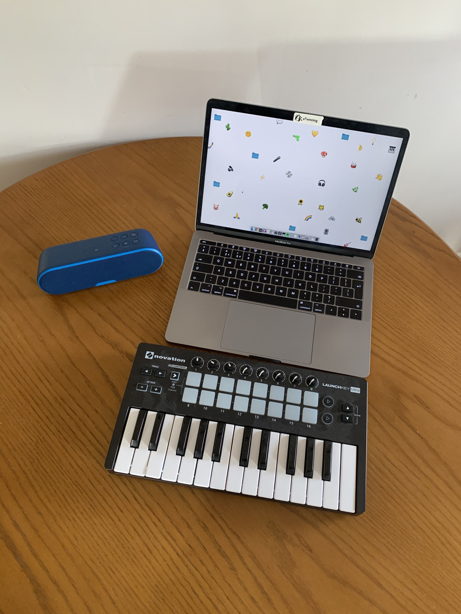

archive stuff, and keep track of things.
Back to Blog | Gary-Martin
Tour in a Day: Planning |
|---|
|
Following on from my reflections on from my noodling experiment, I've began to think about how to go about realising the idea of doing a live music tour in a day. Although the music content and tech setup is on my mind, my first priority is finding spaces to perform in/at. Ideally I would like to explore the idea of playing in a number of regions and then a number of spaces within those. These initially include Cardiff, Newport, Bristol and Cheltenham, with the final performance being at the Salon event at the University of Gloucestershire. I spent this morning scouting venues in Newport, and booked more than I expected, so I may not actually have time to make it to Cardiff in the morning before moving on to Newport - I currently have 11 venues confirmed to perform in.
These include:
Other possibles include: The next step is to find venues in Cheltenham, which I'll do on foot, and venues in Bristol, which I may have to do via phone/message. In all the places I've been in today I had people finishing my sentences when explaining the rationale of the project, which was clearly an incentive for agreeing to host my performance. This was the elevator pitch I had ready, but actually condensed when speaking informally face-to-face: "Hi there... I’m currently running a project that highlights how, for many people, everyday listening experiences have become more passive in recent years due to the increasingly pervasive use of internet platforms and social networking sites that favour visual content over audio. (This is because you can consume lots of pictures and tweets in the same time as it would take to listen to a single piece of music all the way through.) To highlight this, and to give people an interesting active listening experience, I’m currently booking a tour of micro performances that will take place in a single day in a number of locations across Newport, Cardiff, Bristol, and Cheltenham. The idea is that if people haven’t got the time to go to see live music or to mindfully listen to an album all the way through, I could go to them, and in the time of the average interaction on Instagram, they could conveniently watch some live music. The performances are 1-2 minutes long and do not require any tech support; it is a completely mobile setup, in the effort to be as convenient as possible. This is all I use: 
The set style can even be adapted to suit the mood of the location so as not to become too much of a disruption to normal affairs. |